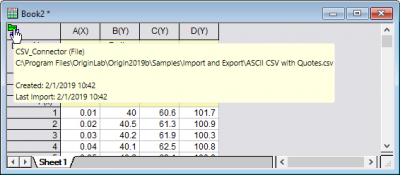
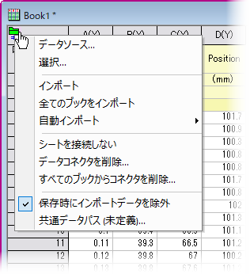
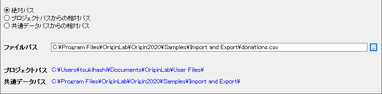
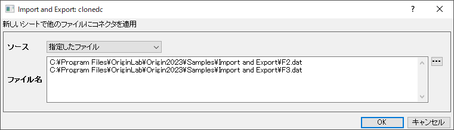
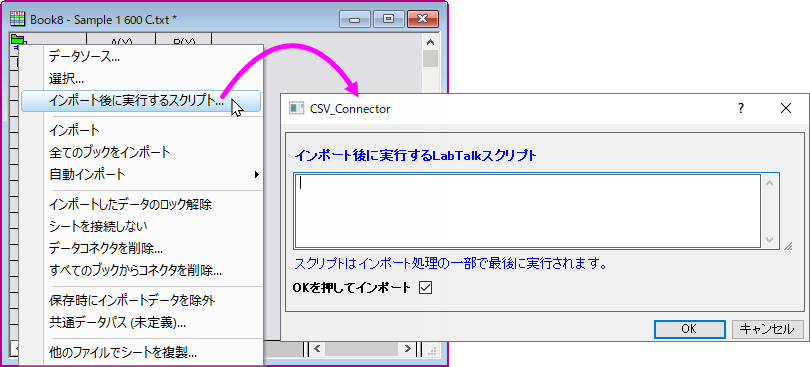
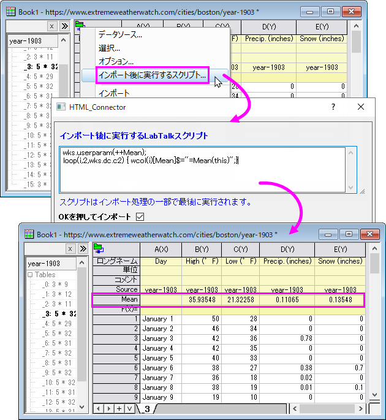
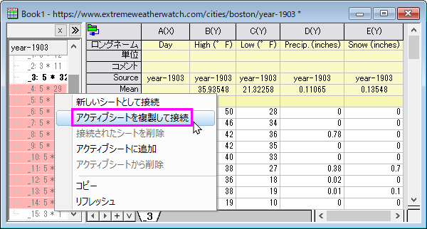
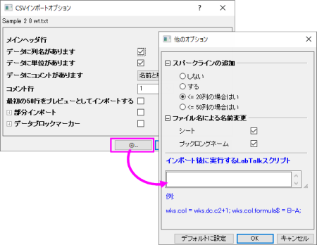
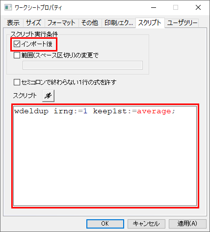

データコネクタ
Data-Connector
接続機能あるいはデータコネクタは、Origin 2019bで追加された新しいインポート機能です。この新しいフレームワークは、Originの従来のファイルのインポートよりもスピード、シンプルさ、データ整合性の面で優れています。コネクタとインポート機能との違いについては、次を参照してください。
データの整合性
データコネクタは、従来のインポート機能よりも高度なデータ保護が可能です。
- データコネクタを含むブックでは、デフォルトでデータを編集できないようになっています。これにより、偶発的な変更や削除からデータを保護できます。
- テキスト／CSV・Excelコネクタによりインポートされたデータは、ソート可能ですが（列を選択して、ワークシート: ソート（ワークシート））、編集はできません。
- Text/CSVとExcel以外のコネクタでインポートされたデータは、デフォルトでソートできません（編集もソートも不可）。
- コネクタによりインポートされたデータの編集、ソートの設定は、インポート実行前に LabTalkシステム変数@IPDCの値を操作することで変更できます。
- 接続されたデータの後処理は、ワークシートにスクリプトを埋め込むことで設定できます。 後処理により、接続されたデータから編集保護を削除する必要性がなくなり、データの保護に役立ちます。
 | 「データ保護」によって、インポートされたデータを変換する目的で（たとえば、値の設定などを使って）ワークシートの最後に列を追加するといった操作ができなくなるということではありません。元のデータを変更できないようにする「データ保護」です。
インポート後のデータを自由に編集する必要がある場合は、コネクタアイコン をクリックし、(a)シートを接続しない、(b) データコネクタを削除して、データコネクタを削除できます。それぞれの違いについては、下のコネクタのメニューを参照してください。ほかに、(c)インポートしたデータのロック解除 (Origin 2021b 以降で利用可能)も利用できます。 をクリックし、(a)シートを接続しない、(b) データコネクタを削除して、データコネクタを削除できます。それぞれの違いについては、下のコネクタのメニューを参照してください。ほかに、(c)インポートしたデータのロック解除 (Origin 2021b 以降で利用可能)も利用できます。
|
シートにコネクタを追加
ワークシートまたは行列にコネクタを追加すると、シシートの左上にコネクタオブジェクトが追加されます。このオブジェクトは、データソースへの接続を管理するために使用する情報が保存されています。
アクティブなワークシートや行列にコネクタを追加するには、以下のいずれかの方法で操作します。
接続状態によって異なるアイコンが表示されます。
| アイコン
|
接続状態
|
|
|
シートがデータコネクタの宛先として使用されています。
|
| -
|
シートはまだデータコネクタによって使用されていません。
|
|
|
データソースに更新があります。
|
|
|
データソースのファイルが存在しません。
|
 | コネクタアイコンにマウスカーソルを合わせると、ツールチップとして基本のコネクタ情報が表示されます。 ツールチップの内部を右クリックしてコピーを選択すると、情報をクリップボードにコピーできます。
- 
|
ダイアログとメニュー
コネクタごとのダイアログ設定は、次のトピックを参照してください。
コネクタを追加したら、シートのコネクタアイコンをクリックして接続を管理できます。
コネクタメニュー:
- 
| データソース
|
ダイアログが開き、データソース選択と変更が可能です。
データソースがディスクファイルの場合、データソースファイルパスダイアログが開きます。
- 
選択して参照し、データソースパスを以下のいずれかの方法で保存します。
- 絶対パス
- プロジェクトの保存フォルダへの相対パス。現在のプロジェクトが保存済みである必要があります。
- 共通データパスコンテキストメニューで設定した共通データパスからの相対パス
|
| 選択
|
ダイアログを再度開いてインポート設定を調整するか、インポートするブランチを選択します。
|
| オプション
|
HTML表コネクタ(ファイル/Webに接続)でのみ利用可能です。詳細はこのページを参照してください。
|
| インポート後に実行するスクリプト
|
インポート後に実行するLabTalkスクリプトを入力します。インポート後のスクリプトについての詳細は下記のインポート後に実行するスクリプトをご覧ください。
|
インポート
全てのブックをインポート
|
ソースデータを以下のようにインポートします。
- アクティブなデータコネクタシート（インポート）
- プロジェクトファイル内のすべてのデータコネクタシート（全てのブックをインポート）
|
| 自動インポート
|
自動インポートは、次のいずれかの場合に発生します。
- プロジェクトが開いている
- データソースが変更された
|
| インポートしたデータのロック解除
|
チェックをつけるとインポートしたデータの編集が可能です。コネクタアイコンをクリックし、インポートを選択してデータを再インポートすると、編集保護が復元されます。
|
| インポート後のアクションをリセット
|
インポート後のデータに対して何らかの操作、たとえば一部の列を削除するなど下場合、データを再インポートする前に、このメニューを選択してアクションをリセットする必要があります。
|
| シートを接続しない
|
ワークシート/行列とデータソース間の接続を解除します。また、編集保護も解除します。 コネクタアイコンは残るので、後でデータを再接続してインポートすることができます。
|
データコネクタを削除
すべてのブックからコネクタを削除
|
以下のデータコネクタを削除します。
- アクティブブックの全シート（データコネクタを削除）
- プロジェクトファイルの全ブック（すべてのブックからコネクタを削除）
全シートから編集保護を削除します。さらに、保存時にインポートデータを除外チェックマークも外します。
|
| 保存時にインポートデータを除外†
|
チェックを付けるとインポートしたデータを消去しますが、ワークブックやプロジェクトを保存するときは接続を維持するので、プロジェクトサイズを小さくすることができ、必要に応じてデータを簡単に再インポートできます。インポートされたデータからグラフがプロットされている場合は、インポートされたデータが消去された後にグラフにダウンロードボタンが表示されます。

|
たとえば、ヘルプ: ラーニングセンターの解析サンプルタブでサンプル = 統計 - 多変量解析を選択し、サンプルプロジェクト判別分析（Pro） を開きます。「データ: 直接再インポート」メニューでデータの再インポートを試すことができます。また、保存時にインポートデータを除外のチェックを付けたり、外して、プロジェクトサイズの変化を確認できます。
|
|
| 共通データパス
|
データソースメニューでソースファイルにすばやくアクセスするために使用できる共通データパスを設定します。このパスはプロジェクト内のすべてのブック間で共有され、プロジェクトとともに保存されます。
共通データパスとして親フォルダを設定するのが一般的です。グループメンバーがアクセスする共有フォルダに共通データパスを設定してから、プロジェクトを共有すると、その利点はさらに明白になります。
|
| ファイルのチェック一時停止
|
数回チェックした後、ソースファイルが存在しないことが判明した場合、それ以上チェックせず、このメニューのファイルのチェック一時停止にチェックがつきます。アイドルチェックを再開するには、このメニューのチェックを外す必要があります。
|
| 他のファイルでシートを複製
|
インポート設定 (インポート後に実行するスクリプトを含む) や解析操作などを含めて現在のワークシートを複製し、ポップアップダイアログで選択した新しいファイルをインポートします。

次のセクションのクローンインポートも参照してください。
|
データメニューのほかのサブメニュー
| 複数ファイルに接続
|
現在、一部のコネクタタイプは、一度に複数のファイルのインポートをサポートしています。たとえば、ワークブックの場合はCSVおよびExcelコネクタ、行列の場合はMatlab、MetroPro、およびWDFコネクタです。
ダイアログの詳細は、このドキュメントをご参照ください。
|
| クローンインポート
|
データ: ファイルからインポートメニューでインポートされたデータで利用できます。データ: ファイルからインポートメニューでインポートした後、アクティブワークブックをテンプレートとして使って、現在のワークブックの複製に新しいファイルをインポートするのがクローンインポートです。現在のワークブックに解析処理が含まれている場合、解析ツールの再計算モードに関係なく、複製の再計算が自動で実行されます。現在のワークブックにN 個のインポートシートがある場合、クローンインポートではN 個のデータファイルを選択順にグループ化し、それに応じて同じグループを1つのブックにインポートします。
|
|
たとえば、ヘルプ: ラーニングセンターの解析サンプルタブでサンプル = バッチ処理を選択し、クローンインポート を開きます。ワークブックをアクティブにして、データ: クローンインポートメニューをクリックして、ほかのデータを選択します。アクティブワークブックが新しいデータでクローン作成されるのがわかります。
|
|
インポートデータの除外と保存
デフォルトでは、インポートファイルからのデータサイズが500kB より小さい場合、プロジェクトに保存され、それより大きい場合は保存されません。
次のLabTalkシステム変数を使って、データ除外のデフォルト設定を変更できます。
- @DNS: ファイルサイズにかかわらずデータを除外するかどうかを設定できます。
- @FSE: プロジェクト保存時に除外するデータサイズのしきい値をキロバイトで設定できます。
- @FSEW: 保存時にWeb、JSON、Origin、MATLABデータを除外するためのOriginワークシートのセル数x 100でしきい値サイズを設定できます。
現在のウィンドウに対し、手動でデータ除外の設定を上書きする方法
インポートファイルサイズまたは、@FSE、 @DNS、@FSEWの設定にかかわらず、次の方法でプロジェクトにデータを保存できます。
- コネクタアイコンをクリックして、保存時にインポートデータを除外のチェックを外します。
- ウィンドウタイトルバーで右クリックして、プロパティを選択し、プロジェクト保存時にインポートデータを除外のチェックを外します。
インポート後にスクリプトを実行
@IPDCの現在の値に関係なく、ソースデータへの接続を切断することなく、インポート時にデータを後処理できます。これは、次の2つの方法で実行できます。
インポート後に実行するスクリプトダイアログ
- インポート後、コネクタアイコンをクリックしてインポート後に実行するスクリプトを選択します。
- 
- OKでインポートはデフォルトでオンになっており、OKボタンをクリックした後にデータを再インポートしてスクリプトを実行します。
|
|
例えば、web page-Boston Weather in 1903からJanuary 1903 Boston Weatherの表をインポート後、それぞれの列で平均値を表示するためにユーザパラメータ行として”Mean”行を追加したいとします。
wks.userparam(++Mean);
loop(i,2,wks.dc.c2) { wcol(i)[Mean]$="=Mean(this)";}
- 
そして、（ドラッグして）ナビゲーションパネルにある複数の表を選択し、アクティブシートを複製して接続のコンテクストメニューを使ってアクティブシートの設定を利用し、12か月の表全てをインポートします。

|
- 特に、CSVコネクタでは、他のオプションボタン（OKの左隣りにあります）をクリックします。他のオプションダイアログが開いたら、インポート後に実行するLabTalkスクリプトの編集ボックスにLabTalkスクリプトを入力します。
- 
ワークシートプロパティダイアログを使用した組み込みLabTalkスクリプト
ワークシートのプロパティダイアログボックス（ワークシート：ワークシート・スクリプト）を使用してLabTalkスクリプトを組み込むこともできます。
- データをインポートする前に、ワークブックをアクティブ化し、ワークシート：ワークシート・スクリプトを選択します。
- スクリプトボックスにスクリプトを入力し、スクリプト実行条件のインポート後にチェックを入れます。スクリプトが実行されるまで、接続されたデータは編集をロックされません。
|
|
以下の例は、wdeldup X-ファンクションを呼び出して、他の列の関連する値を平均することにより、参照列（列1）の重複する値を削除する方法を示しています。
- 
他の例はこのOriginLabのブログ記事で参照してください。
|
他の事項：
その他の操作
複数ファイルに接続の他、現在データコネクタは一度に1つのファイル/表をインポートできます。同じWebページの複数の表、または同じパスの複数のファイルをインポートする場合は、ワークシートに追加メニューを使用して同じブックにすばやくインポートできます。
複数のファイル/表を1つのブックにインポートする
- ファイル/表をデータコネクターを使ってインポートします。
- ワークシートタブで右クリックして、追加を選びます。
- データコネクタ付きの新しいワークシートが追加されます。データソースにはブック内のデータソースがあらかじめ入力されていますが、接続されていません。これを変更して新しい表をインポートできます。
各ワークブックは異なるデータソースを持つことができますが、コネクタタイプ（テキスト／CSV、JSON、またはOPJUなど）は1つだけです。つまり、ブック中の各ワークシートは、そのコネクタタイプでサポートされているデータソースをそれぞれ持つことができます。
デフォルトメニューにないデータタイプをインポート
- データ: ファイル/Webに接続: 新規追加を選択します。
- これにより、アプリセンターで利用可能なデータコネクタが表示されます。使用したいファイルタイプを探し、ダウンロードします。ダウンロードすると、データメニューに自動で追加され使用できます。このアプリは、アプリギャラリーのコネクタタブにも表示されます。